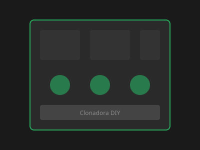
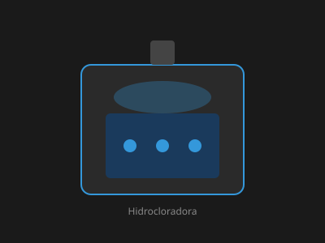

Clonadora de Baixo Custo
Sistema sustentável de reprodução genética com materiais reciclados. Ideal para propagação vegetativa em pequena escala.
Ver manualEquipamentos caseiros documentados com materiais acessíveis e manuais completos.

Sistema sustentável de reprodução genética com materiais reciclados. Ideal para propagação vegetativa em pequena escala.
Ver manual
Equipamento eficiente para tratamento hidropônico simplificado. Oxigenação e circulação de nutrientes.
Ver manual